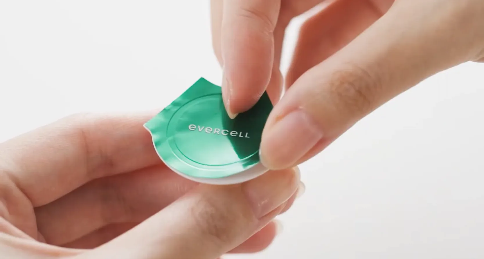
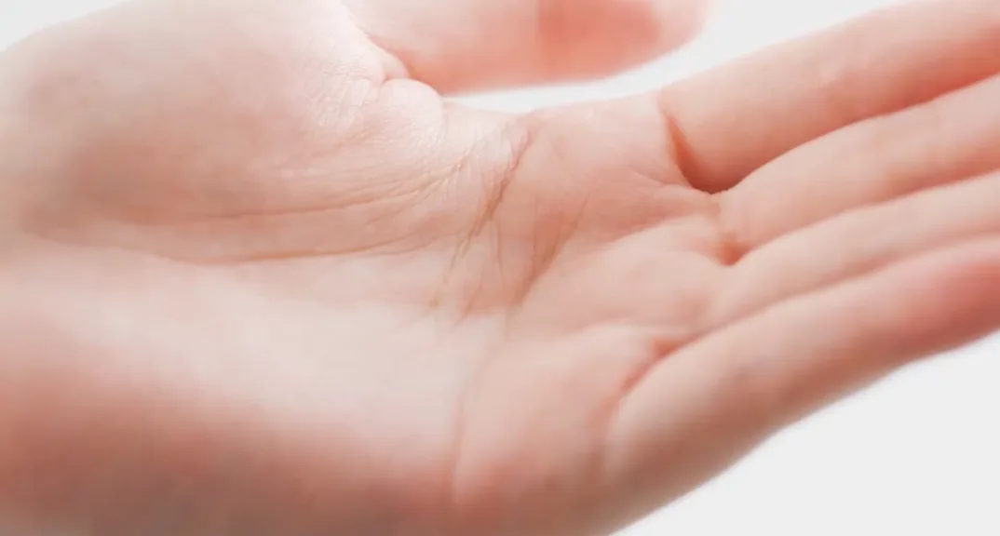
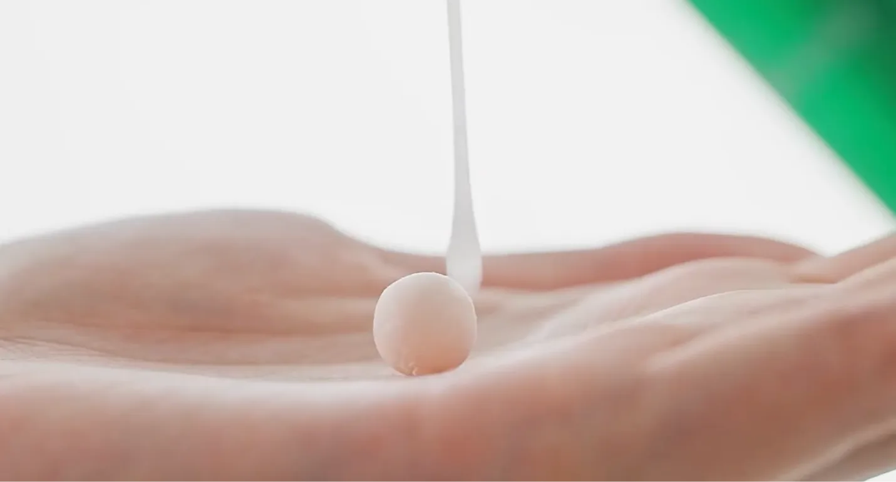

evercell Product
Photography Campaign
Every Product, Clearly Defined
차바이오F&C의 evercell은 줄기세포 연구에서 출발한 안티에이징 브랜드로,
제품마다 형태와 제형, 사용 방식이 모두 다릅니다. 그 차이가 한눈에 보이도록
제품별로 촬영 방식과 구도를 달리 설계해, 디테일과 질감을 선명하게 담았습니다.차바이오F&C의 evercell은
줄기세포 연구에서 출발한
안티에이징 브랜드로,
제품마다 형태와 제형,
사용 방식이 모두 다릅니다.
그 차이가 한눈에 보이도록
제품별로 촬영 방식과 구도를
달리 설계해, 디테일과 질감을
선명하게 담았습니다.evercell by CHA Bio F&C
is an anti-aging brand
born from stem cell research.
Each product has its own form,
texture, and way of use.
We tailored the shooting approach
and framing to each one,
bringing out every detail
and texture with vivid clarity.
Presenting the Collection
형태도 제형도 다른 evercell의 제품들을 한자리에 모아
하나의 컬렉션으로 촬영했습니다. 저마다의 개성은 그대로 두고
같은 톤 안에 놓아, 라인업 전체가 한 브랜드로 읽히도록 했습니다.We brought evercell’s products, each different in form and texture,
together in a single collection shot.
Each keeps its own character,
yet within one shared tone, the full lineup reads as a single brand.

Essential Skincare
세럼과 크림, 그리고 동결 건조한 캡슐을 에센스에 섞어 쓰는
Cell Charger까지
evercell의 기초 스킨케어 라인을 촬영했습니다.
각 제품의 쓰임이 그대로 보이도록
패키지의 디테일과 제형의 특징을
하나하나 짚어 담았습니다.We photographed evercell’s skincare line, from serum
and cream
to the Cell Charger, freeze-dried capsules made to mix into your essence.
Packaging details and textures were captured so each product’s use is clear.


Cell Charger
동결 건조된 캡슐이 에센스와 만나 녹아드는 순간에 주목했습니다.
Cell Charger 고유의 둥근 형태와 섬세한 디테일부터 흡수되며
달라지는 질감까지,
사용 과정을 그대로 따라가며 담아냈습니다.We focused on the moment the freeze-dried capsule melts into the essence.
From its round form and fine details to the texture as it absorbs,
we followed every step of the Cell Charger in use.



Sun care
매일 바르는 선케어 제품은 형태와 제형의 디테일에 초점을 맞춰
촬영했습니다.
질감과 컬러를 근접샷으로 담아, 사용감과 특징이
한눈에 읽히도록 했습니다.For the sun care line, we focused on the details of form and formula.
Close-ups of texture and color make its feel and features clear at a glance.


Campaign Portraits
배우 김서형과 함께한 evercell 캠페인 비주얼의 리터칭을 맡았습니다.
인물의 피부 톤과 제품 패키지의 디테일, 전체 컬러를 정교하게 다듬어,
배우의 존재감과 제품의 품격이 함께 돋보이는 프리미엄 무드로
완성했습니다.We handled the retouching for evercell’s campaign
with actress Kim Seo-hyung.
Refining skin tones, packaging details, and overall color with precision,
we let her presence and the product’s refinement shine
in a premium mood.